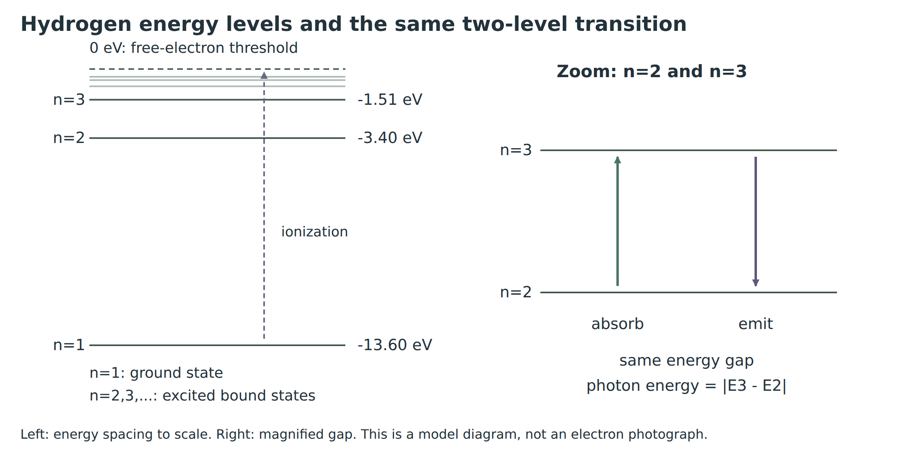
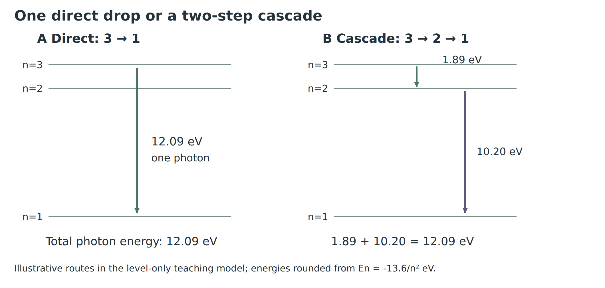
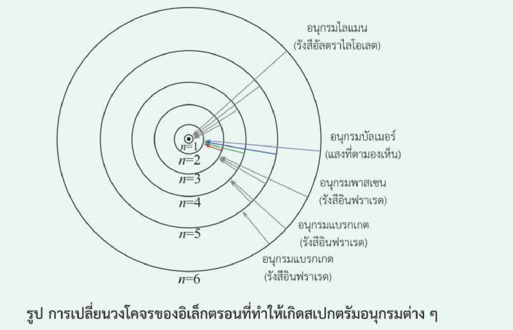
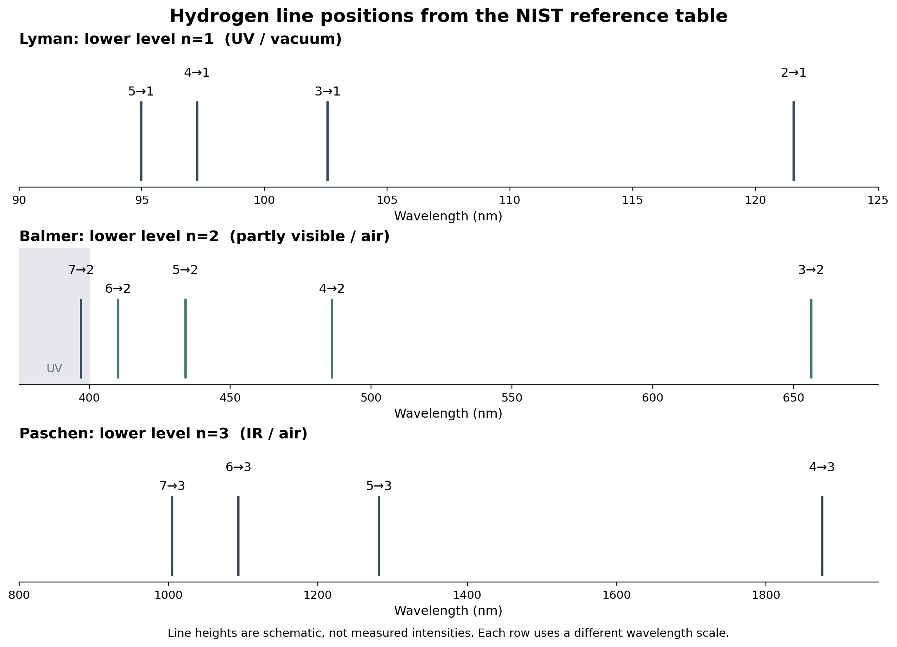
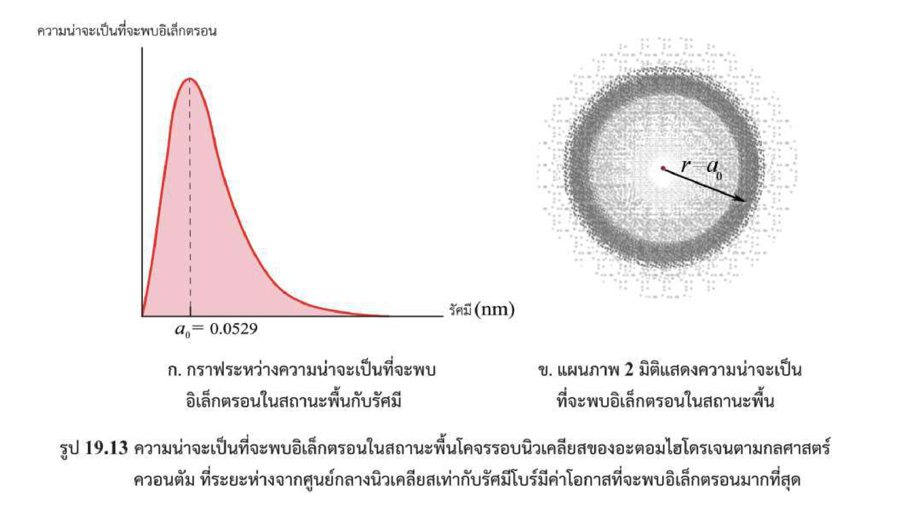
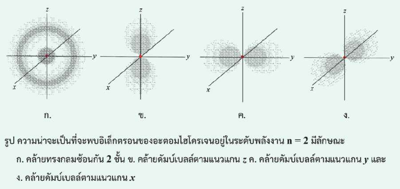

ฟิสิกส์ บทที่ 19 • 19.1 ใบที่ 3
พลังงานโฟตอน • อนุกรมสเปกตรัม • ข้อจำกัดของโบร์และกลุ่มหมอก
จากใบที่ 2 ไฮโดรเจนมี Eₙ = −13.6/n² eV เมื่อเปลี่ยนระดับให้กำหนดระดับเริ่มต้น i และระดับสุดท้าย f ก่อนเสมอ พลังงานที่เปลี่ยนของอะตอมคือ ΔEอะตอม = Ef − Ei ส่วนโฟตอนมีพลังงานบวก

| กระบวนการ | พลังงานอะตอม | พลังงานโฟตอน |
|---|---|---|
| ดูดกลืน: ต่ำ → สูง | ΔEอะตอม > 0 | Eγ = Ef − Ei |
| เปล่งออก: สูง → ต่ำ | ΔEอะตอม < 0 | Eγ = Ei − Ef |
ใช้ h = 6.626 × 10⁻³⁴ J·s, c = 3.00 × 10⁸ m/s และ 1 eV ≈ 1.60 × 10⁻¹⁹ J; ถ้าพลังงานเป็น eV ใช้ hc ≈ 1240 eV·nm ได้ ต้องใช้หน่วยให้เข้าคู่กัน
ไฮโดรเจนเปลี่ยน 3 → 2 จงหา ΔEอะตอม และ Eγ ในหน่วย eV
ΔEอะตอม = −3.400 − (−1.511) = −1.889 eV จึงเปล่งออก แต่ Eγ = +1.889 eV ≈ 1.89 eV
ใช้พลังงานโฟตอนจากข้อก่อน หาความยาวคลื่นโดยประมาณและระบุสี
เป็นแสงสีแดงในช่วงมองเห็น ไม่ใช้ −1.889 eV แทนในสูตรพลังงานโฟตอน
กลับทิศเป็น 2 → 3 ต้องรับหรือปล่อยแสง? พลังงานและความยาวคลื่นเปลี่ยนจากข้อก่อนหรือไม่?
อะตอมที่ถูกกระตุ้นไม่จำเป็นต้องลดทีละชั้นเสมอ ภายใต้แบบจำลองระดับพลังงานนี้ การกลับจาก n = 3 สู่สถานะพื้นอาจเกิดทางตรง 3 → 1 หรือผ่าน 3 → 2 → 1 พลังงานโฟตอนแต่ละตัวต่างกัน แต่พลังงานรวมที่ปล่อยเท่ากัน

อะตอมหนึ่งอะตอมที่เริ่ม n = 3 ให้โฟตอนกี่ตัวในแต่ละเส้นทาง?
แสดงว่าพลังงานรวมสองโฟตอนในเส้นทางผ่าน n = 2 เท่ากับพลังงานโฟตอนทางตรง
1.889 + 10.200 = 12.089 eV เท่ากับพลังงาน 3 → 1 แต่ความถี่ของโฟตอนไม่เท่ากัน และห้ามนำความยาวคลื่นมาบวกแทนพลังงาน
ถ้ามีอะตอมจำนวนมากเริ่มที่ n = 3 และเกิดได้ทั้งสองเส้นทาง จะพบเส้นสเปกตรัมต่างกันได้กี่เส้น? ระบุการเปลี่ยนระดับ
อนุกรมสเปกตรัมของไฮโดรเจนจัดตามระดับปลายทางร่วมกันเมื่อเปล่งออก เช่น การลดจาก 3, 4, 5, … ลงสู่ 2 อยู่ในอนุกรมบัลเมอร์ทั้งหมด แม้มีระดับเริ่มต้นต่างกัน

| อนุกรม | ระดับต่ำ nℓ | ระดับสูง nu | ช่วงรังสี |
|---|---|---|---|
| ไลมาน | 1 | 2, 3, 4, … | UV |
| บัลเมอร์ | 2 | 3, 4, 5, … | มองเห็นและ UV |
| พาเชน | 3 | 4, 5, 6, … | IR |
| แบรกเกต | 4 | 5, 6, 7, … | IR |
| ฟุนด์ | 5 | 6, 7, 8, … | IR |

ระบุอนุกรมของ 5 → 2, 4 → 1 และ 6 → 3 พร้อมช่วงรังสี
เส้นแต่ละเส้นเกิดจากระดับพลังงานคู่หนึ่ง หลักฐานที่ใช้ตรวจแบบจำลองคือความยาวคลื่น/ตำแหน่งเส้นจากการวัด เมื่อคำนวณได้ตรงหลายเส้นจึงสนับสนุนแบบจำลอง ไม่ใช้เพียงภาพวงโคจรที่วาดไว้เป็นหลักฐาน
ให้ nu เป็นระดับพลังงานสูง และ nℓ เป็นระดับพลังงานต่ำ โดย nu > nℓ สำหรับการเปล่งออก ระดับเริ่มต้นคือ nu และสุดท้ายคือ nℓ ใช้ A = 13.6 eV หรือประมาณ 2.18 × 10⁻¹⁸ J ในแบบจำลองไฮโดรเจน
จากใบที่ 2 A = mk²e⁴/(2ℏ²) และ ℏ = h/(2π) จึงระบุค่าคงตัวหน้าวงเล็บได้ดังนี้
หนังสือใช้สัญลักษณ์ R_H และค่าประมาณ 1.0974 × 10⁷ m⁻¹ สูตรระดับพลังงาน −13.6/n² eV เป็นค่าปัดแล้ว จึงอาจให้หลักท้ายต่างจากการใช้ R_H โดยตรง ไม่ตีความความต่างเล็กน้อยนี้ว่าเป็นคนละปรากฏการณ์
สำหรับบัลเมอร์ ให้ nℓ = 2 และ nu = n > 2 จะได้สมการเฉพาะอนุกรม และจัดรูปเป็นสมการบัลเมอร์ได้โดยไม่ต้องจำเพิ่มอีกสูตร
การดูดกลืนระหว่างระดับคู่เดียวกันใช้ผลต่างพลังงานขนาดเดียวกันได้ โดยยังใช้ nℓ, nu ระบุระดับต่ำ–สูง แต่ต้องระบุว่าอะตอมเริ่มที่ระดับต่ำ การเลือกสัญลักษณ์เช่นนี้ช่วยไม่ให้ได้ λ ติดลบ
มีคนแทนการเปล่งออก 4 → 2 เป็น 1/λ = R_H(1/4² − 1/2²) ผิดตรงไหน?
อิเล็กตรอนในไฮโดรเจนเปลี่ยนจาก n = 4 มายัง n = 2 ใช้ R_H = 1.0974 × 10⁷ m⁻¹ ในตัวอย่างนี้
ก. คำนวณความยาวคลื่นแม่เหล็กไฟฟ้าที่ปล่อยออกมา
กลับเศษส่วนจึงได้
\(\lambda=4.85997\times10^{-7}\ {\rm m}=485.997\ {\rm nm}\approx486\ {\rm nm}\)เป็นอนุกรมบัลเมอร์ เส้นสีฟ้า เลขยกกำลังในหน่วยเมตรต้องเป็น −7
ข. หาพลังงานโฟตอนที่ปล่อยออกมาในหน่วย J และ eV
หารด้วย 1.60 × 10⁻¹⁹ J/eV ได้ประมาณ 2.56 eV ถ้าใช้ระดับพลังงานที่ปัดแล้วจะได้ E₄ − E₂ = −0.850 − (−3.400) = 2.55 eV ความต่างเกิดจากค่าคงตัวและการปัด ไม่ควรปัดระหว่างทางเกินจำเป็น
นักเรียนมองเห็นเส้นสเปกตรัมที่เกิดจาก 7 → 2 ของไฮโดรเจนได้หรือไม่ เพราะเหตุใด?
ตามช่วงแสงมองเห็นโดยประมาณ 400–700 nm ที่ใช้ในบท เส้นนี้อยู่ UV จึงไม่เห็นด้วยตาเปล่าในกรอบนี้ แสดงว่าไม่ใช่ทุกเส้นบัลเมอร์จะมองเห็น
ในอนุกรมเดียวกัน nℓ คงที่ เมื่อ nu เพิ่ม พลังงานโฟตอนเพิ่มและ λ ลด เส้นจึงเข้าใกล้กันและลู่เข้าสู่ขีดจำกัด nu → ∞ โดยเส้นที่ยาวที่สุดเกิดจาก nu = nℓ + 1
หาขีดจำกัดความยาวคลื่นของอนุกรมบัลเมอร์ และเปรียบเทียบกับเส้น 3 → 2
ขีดจำกัดอยู่ UV และสั้นกว่าเส้นแรก 3 → 2 ซึ่งประมาณ 656 nm ไม่ได้หมายความว่าเส้นทุกเส้นของบัลเมอร์มี λ เท่าขีดจำกัด
แบบฝึกหัด 19.1 ข้อ 5 — อะตอมสมมติมีระดับตามแผนภาพ ไม่ใช่ระดับ −13.6/n² ของไฮโดรเจน
ถ้าอะตอมเริ่มอยู่สถานะกระตุ้น n = 2 จะปล่อยโฟตอนพลังงานเท่าใดได้ในการลดระดับ?
เริ่มที่ n = 2 จึงลดได้ไป n = 1 เท่านั้น ไม่รวมโฟตอน 2 eV จาก 3 → 2 หรือ 6 eV จาก 3 → 1 เพราะอะตอมไม่ได้เริ่มที่ n = 3
แบบฝึกหัด 19.1 ข้อ 6 ข ต่อจากใบที่ 2: ไฮโดรเจนเริ่ม n = 3 กลับสู่สถานะพื้น ต้องพิจารณาทั้งทางตรงและหลายขั้น
คำนวณความยาวคลื่นจาก 3 → 1 และระบุว่าอยู่ในเส้นทางใด
Eγ = 12.089 eV
\(\lambda\approx\frac{1240}{12.089}\ {\rm nm}\approx 102.6\ {\rm nm}\)เป็นทางตรงสู่สถานะพื้น อยู่อนุกรมไลมาน UV
คำนวณความยาวคลื่นจาก 3 → 2 และระบุว่าอยู่ในเส้นทางใด
Eγ = 1.889 eV
\(\lambda\approx\frac{1240}{1.889}\ {\rm nm}\approx 656\ {\rm nm}\)เป็นขั้นหนึ่งของ 3 → 2 → 1; บัลเมอร์ แสงสีแดง
คำนวณความยาวคลื่นจาก 2 → 1 และระบุว่าอยู่ในเส้นทางใด
Eγ = 10.200 eV
\(\lambda\approx\frac{1240}{10.200}\ {\rm nm}\approx 121.6\ {\rm nm}\)เป็นขั้นหนึ่งของ 3 → 2 → 1; ไลมาน UV
ไฮโดรเจนเริ่มที่ n = 2 ได้รับโฟตอน 1.89 eV หรือ 2.00 eV โฟตอนใดตรงกับการกระตุ้น 2 → 3 ในแบบจำลองระดับพลังงานอุดมคติ?
ตรวจพบโฟตอนประมาณ 2.55 eV จากไฮโดรเจนที่ลดลงสู่ n = 2 จงหาระดับเริ่มต้น
\(2.55=13.6\left(\frac14-\frac1{n_u^2}\right)\)
\(\frac1{n_u^2}=0.25-\frac{2.55}{13.6}=0.0625=\frac1{16}\)
ดังนั้น nu = 4 และการเปลี่ยนระดับคือ 4 → 2
แบบจำลองโบร์อธิบายระดับพลังงานหลักและสเปกตรัมของไฮโดรเจนได้ดี แต่ไม่อธิบายอะตอมหลายอิเล็กตรอนและรายละเอียดสเปกตรัมทั้งหมด การไม่แผ่รังสีในวงโคจรเป็นข้อเสนอ ไม่ใช่คำอธิบายด้วยกลศาสตร์คลาสสิกที่สมบูรณ์
กลศาสตร์ควอนตัมใช้สถานะและฟังก์ชันคลื่นอธิบายข้อมูลที่ทำนายได้ เช่น ความน่าจะเป็นในการพบอิเล็กตรอน ไม่กำหนดเส้นทางวงโคจรแน่นอนเหมือนดาวเคราะห์รอบดวงอาทิตย์ พลังงานยังมีค่าที่อนุญาตเฉพาะบางค่าได้ แม้ไม่มีวงโคจรแบบโบร์

กลุ่มจุดหนาแน่นใช้แทนบริเวณที่มีความน่าจะเป็นในการตรวจพบมาก ไม่ใช่อิเล็กตรอนแตกเป็นหมอก และไม่ใช่มีอิเล็กตรอนหลายตัว ในกราฟซ้าย จุดสูงสุดที่รัศมีโบร์หมายถึงโอกาสพบในเปลือกทรงกลมบางที่ระยะนั้นมากสุดสำหรับช่วง dr เท่ากัน ไม่ใช่การยืนยันว่าความหนาแน่นโอกาสพบ ณ จุดหนึ่งสูงสุดบนวงรัศมีนั้น

ที่ n = 2 มีรูปแบบเชิงพื้นที่หนึ่งแบบสมมาตรทรงกลม (2s) และสามแบบคล้ายดัมบ์เบลตามแกนต่างกัน (2p) ตามภาพ หนังสือนับสี่รูปแบบโดยยังไม่รวมสปิน เลข n เพียงตัวเดียวจึงไม่ระบุรูปแบบเชิงพื้นที่ทั้งหมดของสถานะ ฟังก์ชันคลื่นเป็นเครื่องมือคำนวณความน่าจะเป็น ซึ่งจะศึกษาลึกขึ้นในระดับต่อไป
นักเรียนกล่าวว่า “อิเล็กตรอนวิ่งเป็นหมอกหลายวง และที่ r = a₀ ต้องพบอิเล็กตรอนแน่นอน” แก้ข้อความนี้อย่างไร?
สิ่งใดจากแนวคิดโบร์ยังมีประโยชน์ และสิ่งใดไม่ควรยึดเป็นภาพจริงในแบบจำลองควอนตัม?
เมื่ออ่านสเปกตรัม ให้ถามตามลำดับ: อะตอมชนิดใด → เริ่มระดับใด → ดูดกลืนหรือเปล่งออก → ระดับคู่ใด → ช่องว่างพลังงานเท่าใด → ความยาวคลื่นใด และค่อยระบุอนุกรมจากระดับต่ำที่เกี่ยวข้อง
Physics Chapter 19 • 19.1 Sheet 3
Photon energy • spectral series • Bohr’s limitations and probability clouds
From Sheet 2, hydrogen has Eₙ = −13.6/n² eV. Always identify initial level i and final level f first. The atom’s change is ΔEatom = Ef − Ei; photon energy is positive.
| Process | Atomic energy | Photon energy |
|---|---|---|
| Absorption: lower → higher | ΔEatom > 0 | Eγ = Ef − Ei |
| Emission: higher → lower | ΔEatom < 0 | Eγ = Ei − Ef |
Use h = 6.626 × 10⁻³⁴ J·s, c = 3.00 × 10⁸ m/s and 1 eV ≈ 1.60 × 10⁻¹⁹ J. With energy in eV, hc ≈ 1240 eV·nm is convenient. Keep units consistent.
Hydrogen undergoes 3 → 2. Find ΔEatom and Eγ in eV.
ΔEatom = −3.400 − (−1.511) = −1.889 eV: emission. The photon has Eγ = +1.889 eV ≈ 1.89 eV.
Using the preceding photon energy, estimate the wavelength and identify its colour.
This is visible red light. Do not substitute −1.889 eV as the photon energy.
For the reverse 2 → 3 transition, is light absorbed or emitted? Do its photon energy and wavelength change?
An excited atom need not descend one level at a time. In this energy-level model it may return from n = 3 directly by 3 → 1 or by the cascade 3 → 2 → 1. Individual photon energies differ, but total released energy is the same.
For one atom starting at n = 3, how many photons are emitted along each path?
Show that the two cascade photons have the same total energy as the direct photon.
1.889 + 10.200 = 12.089 eV, equal to the direct 3 → 1 energy. Frequencies differ; wavelengths cannot be added as if they were energies.
If many atoms start at n = 3 and both paths occur, how many distinct lines can appear? List the transitions.
Hydrogen emission series group transitions sharing the same final lower level. For example, 3, 4, 5, … down to 2 all belong to the Balmer series despite different initial levels.
| Series | Lower level nℓ | Upper level nu | Region |
|---|---|---|---|
| Lyman | 1 | 2, 3, 4, … | UV |
| Balmer | 2 | 3, 4, 5, … | Visible and UV |
| Paschen | 3 | 4, 5, 6, … | IR |
| Brackett | 4 | 5, 6, 7, … | IR |
| Pfund | 5 | 6, 7, 8, … | IR |
Name the series and radiation region for 5 → 2, 4 → 1 and 6 → 3.
Each line corresponds to a pair of levels. Measured wavelengths test a model: agreement across many lines supports it. A drawn orbital diagram by itself is not experimental evidence.
Let nu be the upper level and nℓ the lower, with nu > nℓ. For emission, the atom starts at nu and finishes at nℓ. Let A = 13.6 eV, approximately 2.18 × 10⁻¹⁸ J, for the hydrogen model.
From Sheet 2, A = mk²e⁴/(2ℏ²), with ℏ = h/(2π), so the coefficient is:
The textbook writes R_H and uses approximately 1.0974 × 10⁷ m⁻¹. The −13.6/n² eV energies are rounded, so their last digits can differ from a direct R_H calculation. This does not imply a different phenomenon.
For Balmer set nℓ = 2 and nu = n > 2. Rearranging gives the Balmer form without requiring a separate memorized rule:
Absorption between the same pair uses the same gap. Keep nℓ and nu as lower/upper labels while stating that the atom begins at the lower level. This convention avoids a negative wavelength.
Someone writes 1/λ = R_H(1/4² − 1/2²) for emission 4 → 2. What is wrong?
An electron in hydrogen changes from n = 4 to n = 2. Use R_H = 1.0974 × 10⁷ m⁻¹ for this example.
(a) Calculate the emitted wavelength.
Take the reciprocal:
\(\lambda=4.85997\times10^{-7}\ {\rm m}=485.997\ {\rm nm}\approx486\ {\rm nm}\)A cyan Balmer line. The exponent for the wavelength in metres is −7.
(b) Find the emitted photon energy in J and eV.
Divide by 1.60 × 10⁻¹⁹ J/eV to obtain about 2.56 eV. Rounded levels give E₄ − E₂ = −0.850 − (−3.400) = 2.55 eV. Constants and rounding account for the difference; avoid premature rounding.
Can students see the hydrogen 7 → 2 spectral line? Why?
Using the chapter’s approximate visible band of 400–700 nm, this is UV and is not visible in that convention. Not all Balmer lines are visible.
Within one series nℓ is fixed. Increasing nu increases photon energy and decreases λ. Lines converge toward a limit as nu → ∞. The longest wavelength is the first line, nu = nℓ + 1.
Find the Balmer wavelength limit and compare it with the 3 → 2 line.
The limit is UV, shorter than the first 3 → 2 line near 656 nm. Individual Balmer lines do not all have the limiting wavelength.
Exercise 19.1 Q5 — the hypothetical atom has the levels shown below; they are not hydrogen’s −13.6/n² levels.
Starting at excited state n = 2, what photon energy can this atom emit in a downward transition?
Starting at n = 2 allows only 2 → 1 here. Do not include 2 eV from 3 → 2 or 6 eV from 3 → 1: this atom did not start at n = 3.
Exercise 19.1 Q6(b), continued from Sheet 2: hydrogen starts at n = 3 and returns to the ground state. Consider both a direct transition and a cascade.
Calculate the wavelength for 3 → 1 and identify its path.
Eγ = 12.089 eV
\(\lambda\approx\frac{1240}{12.089}\ {\rm nm}\approx 102.6\ {\rm nm}\)The direct route to the ground state; Lyman UV.
Calculate the wavelength for 3 → 2 and identify its path.
Eγ = 1.889 eV
\(\lambda\approx\frac{1240}{1.889}\ {\rm nm}\approx 656\ {\rm nm}\)One step of 3 → 2 → 1; Balmer red light.
Calculate the wavelength for 2 → 1 and identify its path.
Eγ = 10.200 eV
\(\lambda\approx\frac{1240}{10.200}\ {\rm nm}\approx 121.6\ {\rm nm}\)One step of 3 → 2 → 1; Lyman UV.
Hydrogen starts at n = 2. Which photon, 1.89 eV or 2.00 eV, matches the 2 → 3 excitation in the ideal discrete-level model?
A hydrogen photon of about 2.55 eV is emitted in a transition ending at n = 2. Find the initial level.
\(2.55=13.6\left(\frac14-\frac1{n_u^2}\right)\)
\(\frac1{n_u^2}=0.25-\frac{2.55}{13.6}=0.0625=\frac1{16}\)
Thus nu = 4, giving transition 4 → 2.
Bohr’s model explains hydrogen’s main energy levels and spectrum, but not general multi-electron atoms or all spectral details. Non-radiation in an orbit is postulated rather than fully explained by classical mechanics.
Quantum mechanics uses states and wavefunctions to predict quantities such as electron detection probabilities. It does not assign definite planetary paths. Discrete allowed energies remain possible without Bohr-style orbits.
Denser dots represent higher detection probability, not an electron broken into fog or many electrons. In the left radial plot, the peak at the Bohr radius means the greatest probability in a thin spherical shell for equal dr; it is not a claim that pointwise probability density is maximal on that radius.
At n = 2 there is one spherical spatial pattern (2s) and three differently oriented dumbbell-like patterns (2p). The book’s four patterns exclude spin. Thus n alone does not specify the entire spatial state. A wavefunction provides the mathematical probability description, studied further at higher levels.
A student says, “The electron moves as several fog rings, and at r = a₀ we must find it.” Correct this statement.
Which Bohr idea remains useful, and which should not be treated as a literal quantum description?
When reading a spectrum, ask: which atom, which initial state, absorption or emission, which pair of levels, what energy gap, and what wavelength? Then classify the series by the lower level.